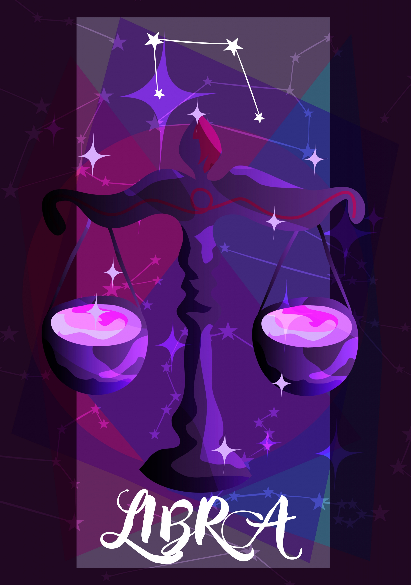

THE SCALES | SEP 23 - OCT 22
DIPLOMATIC, ARTISTIC, INTELLIGENT
| Element: Air | Polarity : Positive |
| Quality : Cardinal | Ruling Planet: Venus |
| Spirit Color : blue | Lucky Gem : Sapphire |
| Flower : Rose | Top Love Matches : Gemini |
| Ruling House : Seventh |
ntelligent, kind, and always willing to put others before themselves, Libras value harmony in all forms. Ruled by Venus, the planet of beauty, Libra adores a life that looks good. As the master of compromise and diplomacy, Libra is adept at seeing all points of view, and excels at crafting compromises and effecting mediation between others. This sign has a rich inner life yet loves other people, and they're always happiest with a large group of friends, family, and coworkers on whom they can count. An air sign, Libra can often be "up in the clouds," and while he or she is amazing at making big plans, follow through can be tricky. Working with detail-oriented signs, like Virgos or Capricorns, can help Libras actually manifest their dreams into reality, especially in the workspace. But don't call out Librans for daydreaming—their imagination is one of their biggest assets, and they often put their imagination to work by finding careers in the arts or in literature.
Libras believe that they're directing their own lives, and they take a big-picture approach in making that life look and feel the best it can be. They spend a lot of time figuring out what's missing from that big picture, and they may feel unhappy if they become too focused on one thing, whether it's work, a partner, or a family member. Librans are at their best when they balance their schedule to include plenty of time for self-care rituals and personal pursuits, and when they give themselves enough flexibility to change focus. When Libra falls in love, he or she falls hard, but this sign also recognizes that there's room for more than one grand love in his or her life. The Scales are pragmatic about love, realizing that different relationships often have different seasons. Librans can sometimes be accused of being too pragmatic, and they've been known to call off a relationship pre-emptively if they feel it may not work due to distance, age difference, or another external conflict.
Although Libra appears self-confident to outsiders, he or she might struggle with insecurity, especially as it relates to personal identity, which sometimes feels mutable. This sign's lifelong question is: "Who am I?" They may find their identity shifting based on where they are in their lives and who they're spending time with. In order to feel more confident in their identity, social Libras need to get comfortable spending time with themselves and getting to know their gut and their internal voice. Libra is fiercely attracted to intelligence, which is just as important as appearance when it comes to the partners they end up falling for. This sign is all about cerebral connections—role-playing, dirty talk, and games in the bedroom all serve to amp up their interest. Physical connection is nice, but a sexy Snap can truly crank up a Libra's libido.
"No person is an island."
Libra's everyday vibe is this gentle reminder: "Let's just all get along." For this sign, compromise is key. Librans don't do well when anyone in their orbit isn't happy, and they're especially adept at inviting other signs to see things from a different perspective. A Libra doesn't strong arm or use coercion, but rather relies on his or her communication prowess to help everyone see another side to a story.
Libra is great at making everyone happy—but what good is that if Libras themselves don't feel fulfilled? While the Scales have a fine-tuned internal compass, they sometimes ignore what they want in favor of what makes everyone else happy—and this habit ends up backfiring in the long run.
This sign has weaponized their imagination in the service of good. Librans' imagination is unmatched, and they can always come up with a new way of looking at an issue. Libra is also blessed with boundless creativity. Even if they're working in a data-dominated field, their creativity shows them novel ways to see things.
Matt Damon, Marion Cotillard, Hugh Jackman, Gwyneth Paltrow, Kim Kardashian, Bruno Mars, Lil Wayne, Bella Thorne, Nick Cannon, Halsey, Will Smith, Candice Swanepoel, Kate Winslet UH OH! WHEN IS THE NEXT MERCURY RETROGRADE? FIND OU